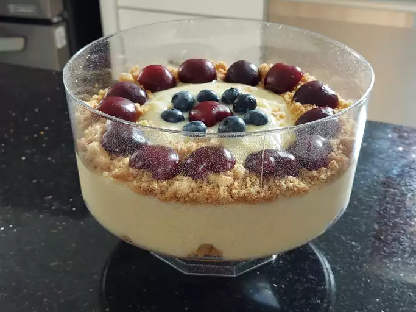

Simple Custard

Ingredients
- 4 cups whole milk
- 1 tablespoon vanilla extract
- 1 teaspoon butter
- 4 eggs
- ½ cup white sugar
- 3 tablespoons cornstarch
- Place milk, vanilla extract, and butter in a saucepan. Cook and stir over medium heat until simmering; remove from heat before it comes to a boil.
- Whisk eggs, sugar, and cornstarch together in a bowl until sugar dissolves.
- Set the saucepan back over low heat. Pour in egg mixture slowly, whisking constantly, until custard thickens enough to coat the bottom of a spoon, 5 to 10 minutes.
- Serve warm or transfer custard into a large bowl, cover, and allow to cool before chilling.